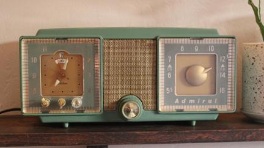
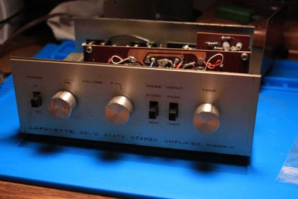
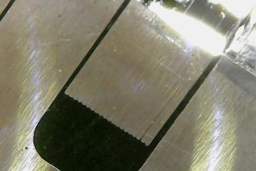

Contact
Resources
About
Projects
Design and Build
Optical Tremolo
A guitar effect built from an old record player
Tele-microphone
A rotary phone turned vocal effect and stage monitor
Bluetooth Tube Radio
 Adding bluetooth functionality to an old tube radio
Repair
Super Reverb
Undoing a crazy mod on a blackface super reverb. This amp has been through a lot.
Roland RE-201
Restoring an almost totalled Space Echo
Tascam 48
Repairing an 8 track tape machine that won't record
Pro Reverb
Repairing a 60's Fender and adding a negative feedback switch
Summit Audio EQ
Fixing an abandoned mastering EQ unit
Rumble 25
Reviving a dead solid-state bass amp
Yamaha CR-420
Quick repair of a Yamaha stereo receiver
Vibrolux
Repair of an impressively preserved silverface that lost its reverb
Nikko NR-315
Repair of a flea market found amplifier
Pax I
Fixing a vaporizer that doesn't heat up
Lafayette Stereo-10
 Recapping a flea market receiver
Miscellaneous
AT803b
Reverse engineering an Audio Technica lavalier microphone preamp
Comparator Fuzz
Using a comparator to create a fuzz effect for guitar
Head Shots
 Looking at some eroded tape heads with a microscope
Please enable JavaScript to view the
comments powered by Disqus.